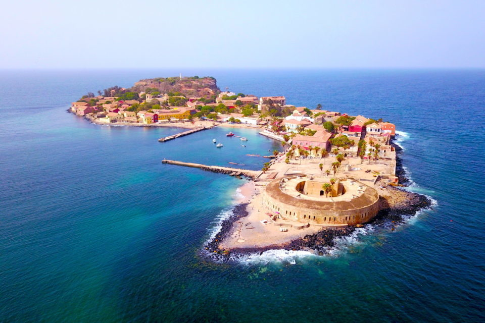

Sénégal : l'île de Gorée
Classé au patrimoine mondial de l’UNESCO depuis 1978, l’endroit est le symbole de l’exploitation humaine et de l’esclavage. Non seulement l’île vous invite à découvrir une partie de l’histoire du Sénégal, mais elle vous met également face à un
pan sombre de l’Histoire. Apprêtez-vous à vivre une visite riche en émotions en mettant le cap sur cette île si particulière.C’est en 1444 que l’histoire de l’île de Gorée a débuté, lorsque le navigateur portugais Dinis Dias a posé le pied sur
une terre qu’il a baptisée « Palma ». Gouvernée tour à tour par les Portugais, les Néerlandais, les Britanniques et les Français, l’île a connu des siècles mouvementés, marqués par plusieurs guerres visant à déterminer qui aurait la chance de
détenir cette île stratégiquement située.En s’imposant comme le point le plus à l’ouest de l’Afrique, à une vingtaine de minutes de Dakar, l’île de Gorée constituait en effet une escale idéale pour tous les navigateurs. Mais elle est
aujourd’hui principalement connue pour avoir été un centre de commerce d’esclaves de la côte africaine du XVe au XIXe siècle. Pour tous les voyageurs du monde, l’île de Gorée est directement associée à l’époque sombre de l’esclavage.Si les
historiens peinent à cerner l’ampleur du marché des esclaves qui a existé sur l’île, ils ont longtemps estimé qu’entre 900 et 15 000 esclaves ont été déportés depuis Gorée entre 1726 et 1848. Aujourd’hui, on pense que le nombre de captifs
déportés en réalité depuis l’île sénégalaise ne dépasserait pas 3 500 sur l’ensemble de la période de la traite. Un chiffre qui donne, quoi qu’il en soit, des frissons.
LA MAISON DES ESCLAVES, LE POINT FORT DE VOTRE VISITE

Sur l’île de Gorée, la Maison des Esclaves, fondée en 1776, est le monument le plus célèbre. Lieu plus symbolique qu’historique, cette maison constitue une terre de pèlerinage pour la population africaine. Beaucoup de voyageurs qui y sont
passés
vous diront que cette maison ne se visite pas, elle se vit.
Dans les minuscules cellules, les esclaves étaient séparés de leurs familles, entassés et enchaînés, en attendant d’être vendus ou de mourir. La porte dite du « voyage sans retour » ne pourra pas vous laisser de marbre. C’est cette porte que
les
esclaves empruntaient pour embarquer sur un bateau les menant loin des leurs, vers une vie de souffrances.

LES MAISONS COLONIALES, L’UNE DES BEAUTÉS DE L’ÎLE
Si le tourisme sur l’île de Gorée est en grande partie lié à la triste histoire des esclaves, il est important de préciser que toutes les maisons coloniales de l’île n’ont pas une symbolique aussi forte que la Maison des Esclaves.
Pendant votre visite, vous pourrez admirer de nombreuses maisons colorées typiques, construites à la fin du 18e siècle, avec leurs rez-de-chaussée surélevés et leurs espaces voutés. Sur cette île où aucune voiture ne circule, profitez de
l’ambiance sereine qui se dégage des rues et du sourire des habitants.
Votre passage sur l’île est aussi l’occasion de vous cultiver dans l’un des nombreux musées ouverts toute l’année. Le musée de la mer, réputé pour sa collection de 750 espèces de poissons et 700 espèces de mollusques, ravira les amoureux de
l’eau. Le musée de la femme, ouvert en 1994, vous permettra de rendre hommage aux femmes du pays.
Enfin, le musée historique, situé dans l’ancien Fort d’Estrées et rattaché à l’institut fondamental d’Afrique noire, vous invitera à plonger dans l’histoire générale du pays, de ses origines à son indépendance. De quoi vous montrer à quel point
l’île de Gorée fait partie de l’histoire du Sénégal.